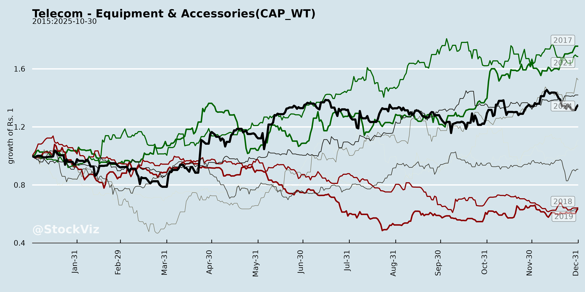
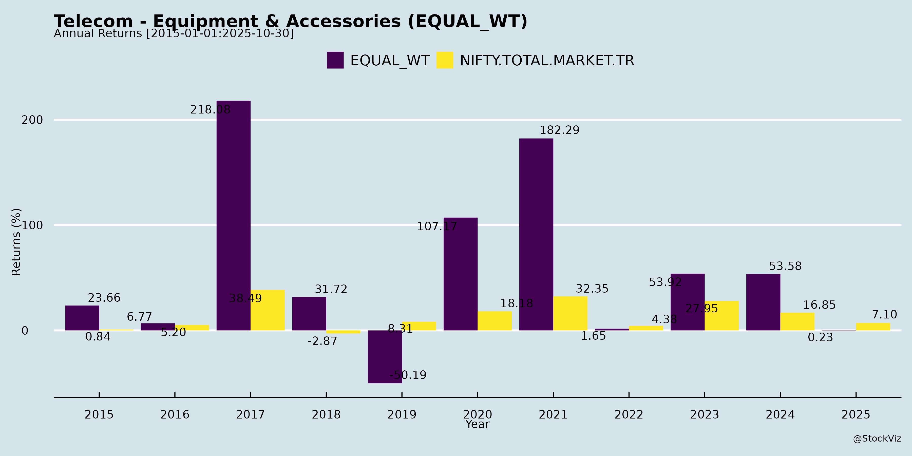
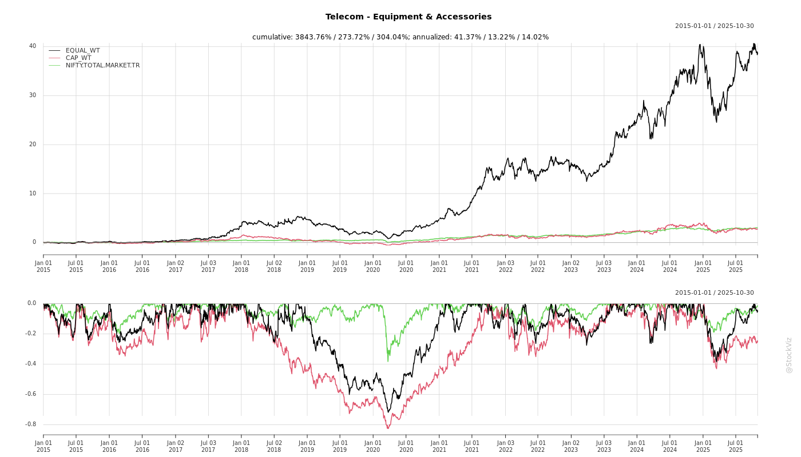
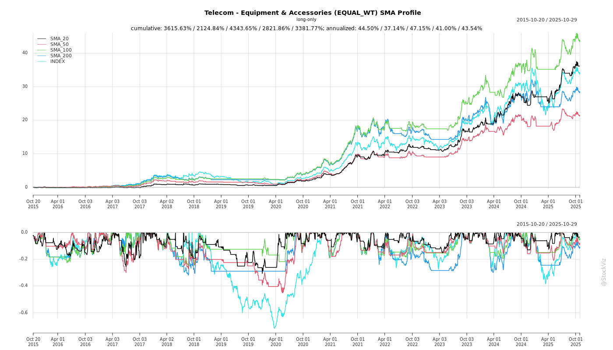
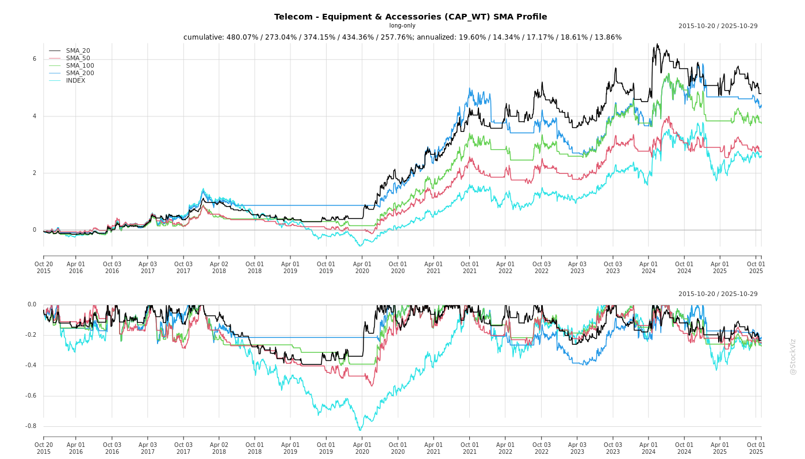
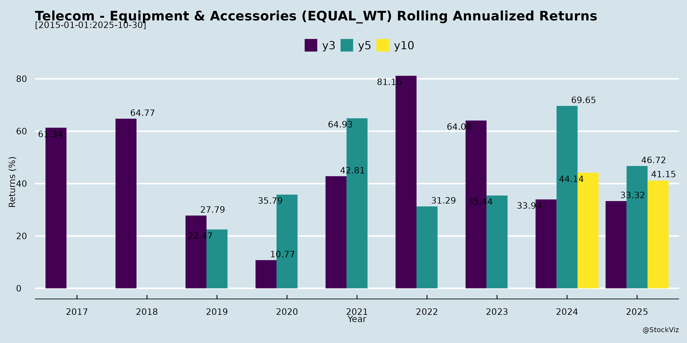

asof: 2025-11-29
Indian Telecom Equipment & Accessories Sector Analysis
Based on inputs from Tejas Networks (investor meet intimation), Sterlite Technologies Ltd (STL) Q2/H1 FY26 earnings transcript, and Optiemus Infracom (analyst meet intimation). These documents highlight optical networking, fiber cables, connectivity solutions, and related equipment/accessories, with STL providing the most detailed sector insights amid global/India demand cycles.
Tailwinds
Headwinds
Growth Prospects
Key Risks
Summary: Sector poised for robust multi-year growth (AI/5G/FTTH super-cycle, 10-12%+ CAGRs in key markets) with strong orders/innovations offsetting tariff headwinds. STL’s resilience (revenue/margin up, order book visibility) exemplifies tailwinds dominating, but tariff clarity by Q3 FY26 pivotal for sustained profitability. Risk-reward favors bulls amid investor interest.
asof: 2025-12-02
Indian Telecom Equipment & Accessories Sector Analysis (Based on Q3/9M FY25 Results of Key Players: ITI, Tejas Networks, STL, Optiemus, Birla Cable, Kavveri Defence, MRO-TEK)
The sector shows mixed performance: Strong revenue growth in select players (Tejas, Optiemus) driven by PLI incentives and 5G/defence orders, but persistent losses, high debt, and audit issues plague PSUs/legacy firms (ITI, STL, Kavveri). Overall 9M FY25 revenue up ~20-50% YoY for profitable peers, but EBITDA margins compressed (3-10%) due to finance costs (15-20% of expenses).
Headwinds
Tailwinds
Growth Prospects
Key Risks
| Risk Category | Details | Impact (High/Med/Low) |
|---|---|---|
| Going Concern/Liquidity | ITI/Kavveri/STL: Losses, debt, delays; Kavveri subsidiaries IBC. | High |
| Audit/Compliance | Disclaimers (ITI), qualifications (Kavveri: impairments, forex, gratuity); unconfirmed balances (ITI ₹108 Cr banks, receivables). | High |
| Forex/Impairments | Kavveri forex non-reinstatement; ITI inventory obsolescence; subsidiaries losses (no impairment). | High |
| Revenue Recognition | ITI/STL: Ind AS 115 doubts (milestone-based); unbilled ₹180 Bn (ITI). | Med-High |
| Litigation/Regulatory | STL US suit (₹965 Cr); ITI PoC delays; MSME non-ID (ITI/STL). | Med |
| Execution | Order delays (ITI ASCON); real estate cyclicality (MRO-TEK). | Med |
| Macro | Input costs, forex volatility; 5G capex slowdown. | Low-Med |
Summary: Sector poised for 5G/defence-led growth (tailwinds: PLI, orders), but legacy issues (headwinds: losses, debt) dominate PSUs. Profitable firms (Tejas/Optiemus) signal revival; monitor audit resolutions & order execution for FY26 upside. Overall outlook: Cautiously Optimistic (20-30% sector growth, but high execution risks).
asof: 2025-12-03
Summary Analysis: Indian Telecom Equipment & Accessories Sector
Based on the provided documents from key players (ITI Ltd., Tejas Networks, Sterlite Technologies, Optiemus Infracom, Kavveri Defence & Wireless Technologies, Umiya Buildcon/MRO-TEK, Aksh Optifibre, and Tamilnadu Telecommunications Ltd./TTL), the sector shows resilience amid government support but faces execution and compliance challenges. The analysis focuses on headwinds (challenges), tailwinds (supports), growth prospects, and key risks.
Tailwinds (Positive Factors)
Headwinds (Challenges)
Growth Prospects
Key Risks
Overall Outlook: Bullish with Cautious Optimism. Tailwinds from PLI/Make in India outweigh headwinds, projecting 20-25% sector growth in FY26 driven by 5G infra (₹2-3L Cr capex). Monitor execution of JVs/R&D and compliance for sustained momentum. Recommended: Track PLI disbursements and Q3 FY26 earnings for validation.
asof: 2025-11-29
Using the provided documents (Tejas Networks Investors’ Presentation, STL Q2 FY26 Earnings Transcript, and Optiemus Infracom Q2 FY26 Update) as primary inputs, this analysis focuses on the Indian Telecom Equipment & Accessories sector. These companies represent key players: Tejas Networks (end-to-end wireless/wireline equipment), Sterlite Technologies (STL) (optical fiber cables & connectivity), and Optiemus Infracom (EMS for devices/accessories like smartphones, hearables, fintech hardware). The sector benefits from India’s digital infrastructure push but faces global trade and execution challenges.
| Metric | Tejas | STL | Optiemus |
|---|---|---|---|
| Order Book | ₹1,204 Cr (93% India) | ₹5,188 Cr | Robust EMS inflows |
| Revenue Growth (Recent) | 9x FY23-25 | +6% H1 FY26 | +148% standalone Q2 |
| EBITDA Margin | 10% FY25 | 13.6% Q2 FY26 | 8% consolidated Q2 |
The sector is in a multi-year growth super-cycle driven by 5G, FTTH, AI/data centers, and PLI/Atmanirbharta (projected TAM ex-China: billions USD). Companies show resilience (margin expansion, order growth) amid headwinds like US tariffs (STL-specific) and execution delays. Bullish Outlook: 20-30%+ CAGR feasible FY26-30 via domestic mega-projects and exports, with Tejas/STL leading equipment/optics and Optiemus in accessories/EMS. Key Watch: Tariff resolution (Q3 FY26 expected), BSNL execution. Risk-reward favors longs, but monitor US trade and debt metrics. Sector poised for India’s $500B electronics ecosystem goal.
asof: 2025-11-29
Indian Telecom Equipment & Accessories Sector Analysis
Based on provided press releases (ITI Ltd, Tejas Networks, STL, Optiemus Infracom, TTL) dated Sep-Nov 2025.
Tailwinds (Positive Drivers)
Headwinds (Challenges)
Growth Prospects
Key Risks
| Risk Category | Description | Mitigation from Docs |
|---|---|---|
| Execution | Delays in integration/testing (e.g., Kerala Savaari pilots, DWDM commissioning). | ITI/Tejas technical support commitments. |
| Regulatory/Approval | Statutory nods for JVs (Optiemus), NQM compliance. | Binding term sheets/MoUs in place. |
| Technological | Quantum immaturity; MCF/QKD scalability unproven. | Proven demos (170km QKD + 1.8Tbps). |
| Financial/Market | Revenue concentration (govt ~70%); forex/competition. | Diversification (apps/hardware); SAFE harbour noted. |
| Geopolitical | Supply chain for optics/chips; US-China tensions. | Indigenous focus (Make in India). |
Overall Summary: Bullish sector with tailwinds from govt tech-push outweighing headwinds. Growth anchored in optical/DWDM/quantum upgrades and diversification; monitor Q2 results (TTL) and JV executions for near-term triggers. Risks moderate, tilted toward execution in emerging tech.
Copyright © 2023 SAS Data Analytics Pvt. Ltd. All rights reserved.